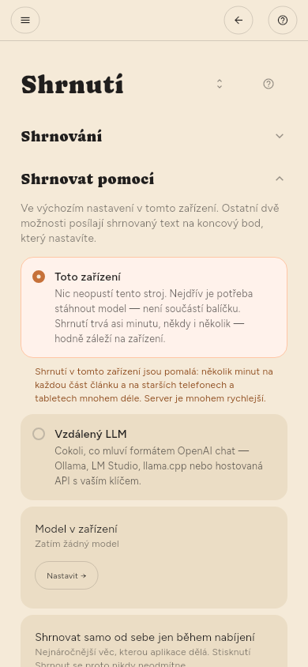

Shrnutí
Kde shrnování probíhá
Nastavení › Základní › Shrnutí › Shrnovat pomocí.
- Toto zařízení — model, který si stáhnete. Nic neopustí počítač. Je to pomalejší a stojí to baterii: několik minut na každou část článku a mnohem déle ve starších telefonech a tabletech.
- Vzdálený LLM — váš vlastní server, nebo cloudové API. Rychlejší, stojí peníze a je to jediný případ, kdy text článku někam odchází.
Každá možnost má svou stránku ve skupině Pokročilé: Model v zařízení pro toto zařízení, LLM server pro server. Obě stránky jsou tam vždy; ta, která se nepoužívá, to říká nahoře.

Výběr modelu
Nastavení › Pokročilé › Model v zařízení › Najít model. Vyhledejte model, otevřete u výsledku Varianty a uvidíte soubory, které obsahuje — liší se velikostí a velikost rozhoduje o tom, zda se vejde — a stáhněte ten, který chcete.
Stažené modely najdete v Nastavení › Pokročilé › Model v zařízení › Modely v tomto zařízení. Spustit model načte a udělá z něj model, který odpovídá — spuštěním ho vybíráte. Najednou běží jen jeden, takže spuštění jiného se nejdřív zeptá: model v paměti musí odejít, než přijde další. Volba se pamatuje a Načíst ho při spuštění aplikace ho načte znovu samo. Smazat odstraní soubory i řádek najednou.
Některé modely tady vůbec nepoběží — soubor může vyžadovat grafickou podporu, o kterou tato verze nemá jak požádat, a aplikace to řekne, místo aby to zkoušela znovu.
Automatická shrnutí (jen Premium)
Automatická shrnutí jsou v Premium. Shrnování běží na konci kontroly nových článků. Samostatný plán nemá — pokud je Nastavení › Základní › Stahování › Jak často kontrolovat nastaveno na Jen když o to požádám, nic se neshrne, dokud o to nepožádáte.
O tom, co kontrola shrne, rozhodují dvě věci:
- Pro každý zdroj. Každý kanál má přepínač Shrnout, ve výchozím stavu vypnutý. Nastavíte ho v panelu kanálu nebo v Nastavení › Základní › Zdroje › Zdroje.
- Pro každou kontrolu. Nastavení › Základní › Shrnutí › Shrnutí najednou určuje, kolik jich smí jedna kontrola udělat a od kterého konce fronty postupuje.
| Nastavení | Význam |
|---|---|
| Shrnutí na jednu kontrolu | Výchozí 30. Bez omezení udělá vše, co čeká |
| Zpracovávat | Nejnovější první drží krok s příchozími. Nejstarší první vyčistí nahromaděné |
Vlastní text článku se stahuje během kontroly, ne později — až dvacet na kanál za kolo, od nejnovějších. Článek, který přijde bez textu, většinou selhal, ne že by byl odložen, a čtečka řekne proč.
Nejnovější první je správná volba pro každý den. Pokud za kontrolu přijde víc, než číslo dovolí, přeskočené články s každou kontrolou zaostávají víc — Nejstarší první je cesta, jak se k nim dostat.
Nastavení › Základní › Shrnutí › Shrnování › Minimální délka textu drží velmi krátké texty mimo model. Výchozí hodnota je 300 znaků. Kratší text se označí jako příliš krátký a zobrazí se celý, protože jeho shrnutí by bylo delší než text sám. Krátký příspěvek ze sociální sítě s právě jedním odkazem je jiný případ: aplikace místo něj načte odkazovaný článek a shrne ten, a příspěvek ukáže nad shrnutím. 0 obojí vypne. Shrnout ve čtečce funguje i na krátký text.
Každé shrnutí je jeden požadavek. U placeného modelu je počet na kontrolu to, co každá kontrola stojí, zatímco se nedíváte — stojí za to ho zvolit, ne k němu dojít náhodou.
Ruční shrnutí
- Jeden článek — otevřete ho a stiskněte Shrnout.
- Jeden kanál — v jeho panelu Shrnout tento kanál.
- Cokoli je vyfiltrováno — tlačítko Shrnout vše v panelu filtrů. Řekne, kolik jich udělá, a přesně tolik jich udělá.
V jakém jazyce je shrnutí
Ve výchozím stavu v jazyce, ve kterém je článek napsaný. Když stránka neuvádí, v jakém jazyce je, aplikace ho odhadne z textu. Nastavení › Základní › Shrnutí › Jazyk shrnutí to změní, pokud chcete číst shrnutí vždy v jednom jazyce.
Když se nic neshrne
Nejčastější příčinou je, že není načtený žádný model. Upozornění to řekne a Nastavení › Pokročilé › Ladění › Trasování zaznamená důvod každého pokusu.